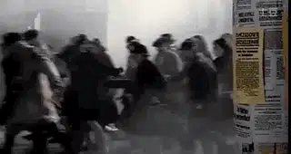
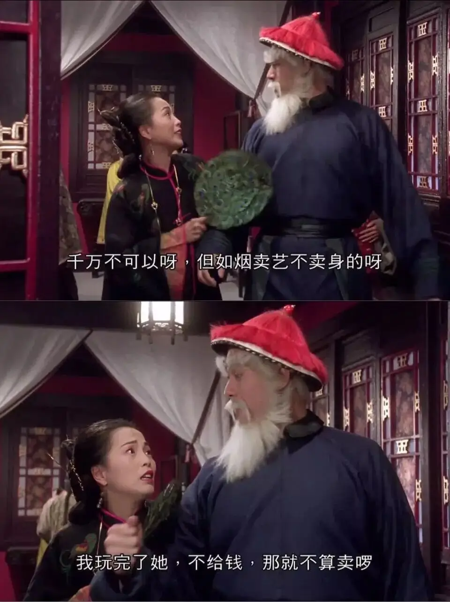

id="js_content" style="">

最近就某个事和一个朋友聊天，聊得我心好塞。
我们是这样聊天的：
他们对我们说谎了，这样不对（我）
那是历史的必然，他们也是不得已的（他）
那你是说撒谎是应该的么？
是闹事的人吃饱了撑着没事干，如果当时是我，我也会那么做，天下大乱了，所有人都得遭殃，这样好么？
可是他们说谎了。
隔壁老王就不说谎么，天下乌鸦一般黑。
老王具体哪件事说谎了。
我想想......那个......反正资本主义来到世间，从头到脚，每个毛孔都滴着血和肮脏的东西。
你这样笼统的的说，我们没有办法讨论，需要具体的案例。
老王家里有钱，他参选村长的时候，难道就没有花黑钱上位么
你有证据么
这还需要证据么，你看老王那嚣张样。
好吧，就算是老王也说过谎话，那他们说谎就是理所当然么。
哥，你还是先把你自己的事情做好吧。
这是另外一件事，我们现在讨论的是，他们说谎对不对。
人家给了你饭碗，你吃着别人的饭又说着别人的坏话，这样好么？
那是我劳动所得，是我应得的，我们要一事一议，他们说谎对么？
醒醒吧，不要这么天真，你蹲局子了，你妻子一个人带孩子，你对得起她们么？
我只是问你，他们说谎对么，我又不是要冲锋陷阵。
你怎么这么倔呢，有些事情注定是没有答案的。
那我们还要告诉孩子不要说谎么。
当然不行了。
那他们说谎就可以么。
too young too simple，这件事不是我们这些屁民可以讨论的，历史功过你能够判断么。
现在我们讨论的不是功过，而是是非，他们说谎对么。
如果说谎能国泰民安，说谎有什么错，你为什么揪着别人的小辫子不放，你又为这个郭做了多大的贡献。
你的意思是：说谎是正确的
我不是这个意思，我是说特定条件下的说谎虽然不光彩，但也是无可厚非。
那因为谎言死去的人呢。
从大范围上来看，保证了大多数人的利益，这也是不得已的牺牲，是历史的选择。
也就是说你支持他们说谎，是这样的么。
你为什么一定要一个极端的答案，什么事情都是两面的，都是有利有弊的，你又不是没有学过辩证法，这件事情上也是这样，一定有瑕疵，但是好的影响更大。
我不太理解你说的辩证法，说谎、人命这件事上有辩证法么。
就是说凡事不要走极端，没有绝对的对与错、是与非。
我还是不明白，我只是问你他们说谎对么。
你怎么听不明白呢，这件事是没有立场、难有结论的。
也就是说你对于他们说谎这件事上你不置可否，这不是一种默许么。
你怎么就绕不过来呢，凡事有阴有阳，你为什么要非此即彼呢。
我不太理解，我就简单问你，他们向我们说谎是正确的事么。
如果你非要要一个答案，我只能告诉你稳定压倒一切。
你没有回答我的问题，他们说谎对么。
你这样问有什么意义呢，历史已经发生，你要一个答案有意义么，可以改变什么么。
我没有想这么多，我只是就事论事问你他们说谎正不正确。
你有你的理念，我有我的追求，我拒绝回答这个问题，我觉得没有任何意义。
........
我问的问题有这么复杂么？
辩证法、实用主义、集体主义、厚黑学、儒教再加上爱国主义，真的太无敌了！
真替特朗普捏把汗，希望不要被我们的组合拳打晕在厕所中。

相关推荐：
疯子带着瞎子走路，这正是我们时代的病态！
像猪一样活着，像猪一样死去 !
这里没有挑逗你眼目情欲的小鲜肉
也没有挑动你肉体情欲的段子
更没有膨胀你今生骄傲的鸡血
我们只在乎那些最质朴真诚的作品
在那里我们才能恢复真正的想象力
我们也坚信这才是我们真正需要的

ID:Six_hundred_hits
长按二维码，一键关注
【六百击】
-END-
电影评论
尽情分享朋友圈

苹果打赏通道
小提示：文末广告是腾讯配送广告，内容与本号无关，但您的每次点击（无需反复点）都会给平台带来几毛收益，欢迎您点击支持六百击。